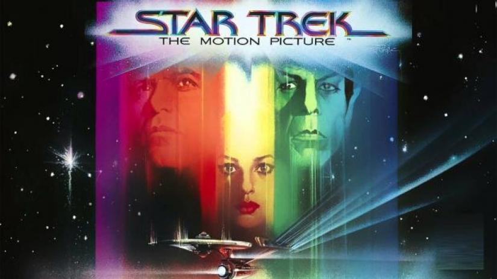

Sinopsis
La nave estelar USS Enterprise está bajo un gran reacondicionamiento y su excomandante, James T. Kirk, ha sido ascendido a Almirante y ahora es Jefe de Operaciones de la Flota Estelar. Una poderosa fuerza alienígena, en forma de una masiva nube de energía con una longitud de 82 unidades astronómicas, es detectada en espacio Klingon y parece dirigirse rumbo a la Tierra. A su paso, la nube destruye tres naves Klingons y la estación espacial de la flota Epsilon 9. Como única nave en rango del alcance, la flota envía la Enterprise para interceptar la nube, acelerando su reacondicionamiento, el cual deberá ser probado en el transcurso de la misión asignada. El Almirante Kirk toma el mando de la nave, lo cual disgusta al capitán Willard Decker, quien ha supervisado las mejoras como nuevo oficial. Con varios de los ex miembros de la tripulación a bordo, la Enterprise inicia su viaje.
